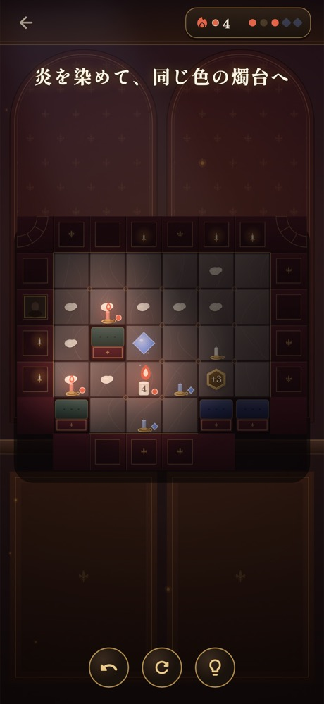
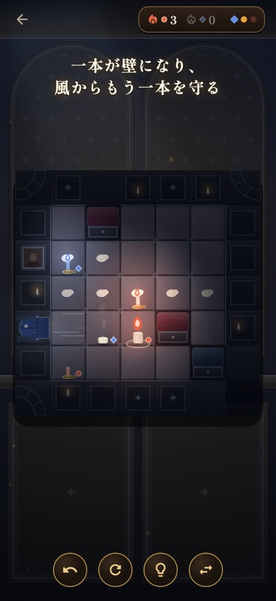

歩くと、短くなる
ロウソクの長さを見ながら、
灯りまでの道を考える。
CANDLE WALK · 一筆書き × 思考パズル
消えるまでに、
この洋館に、灯りを。
一歩進むたび、短くなるロウソク。
残りの長さが、残りの手数。
小さな炎と一緒に、次の一歩を考える。
25ステージ無料 · 広告なし · 時間制限なし
続きは500円の買い切り / アプリ内課金あり

A LITTLE FLAME, A LONG JOURNEY
目指すのは、すべての燭台に火を灯すこと。
けれど、通った跡にはロウが残り、もう戻れない。
行き先を思い描いてから、そっと踏み出そう。
ロウソクの長さを見ながら、
灯りまでの道を考える。
同じ場所は通れない。
一筆書きのように、道をつなぐ。
最後のひとつに灯ったら、
次の部屋が待っている。

ROOM BY ROOM
炎の色を変えたり、
二本のロウソクで道を分けあったり。
部屋を進むほど、いつもの一歩に
新しい意味が生まれます。
スワイプでも、タップでも。片手でゆっくり。

TAKE YOUR TIME
風を遮る一本と、
その陰を進むもう一本。
小さな工夫が道になる、
静かなひらめきを楽しんでください。
BEFORE YOUR FIRST STEP
章一の25ステージを無料で遊べます。全6章150ステージのうち、残り125ステージは500円の買い切りで解放できます。サブスクリプションはありません。
広告も時間制限もありません。急がず、自分のペースで一手ずつ考えられます。
スワイプまたは隣のマスのタップで操作できます。行き詰まったときはヒントを使えます。「1手戻す」と「やり直す」も何度でも使えます。
iPhone・iPad向けにApp Storeで配信中です。Android版はクローズドテストの参加者を募集中です。参加条件と手順はこちら。
YOUR FIRST LIGHT
章一の25ステージを、無料で。
その先は、500円の買い切りで残り125ステージを解放。
広告なし。サブスクリプションなし。
あなたのペースで、最後の部屋まで。
ANDROID CLOSED TEST
Android版のクローズドテスト参加者を募集中です。
参加条件と手順をご確認ください。